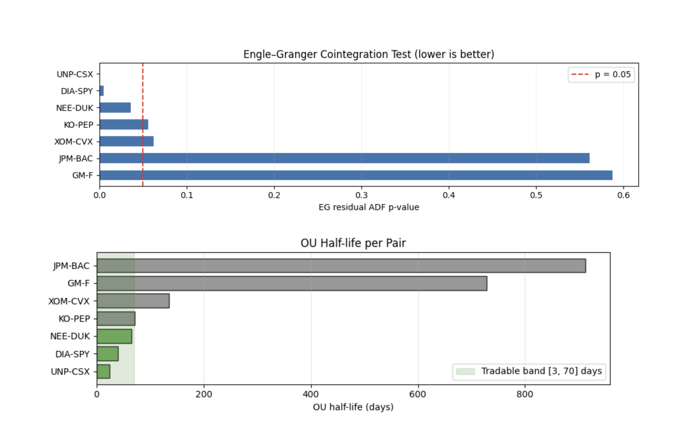
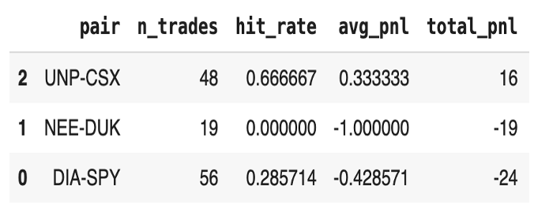
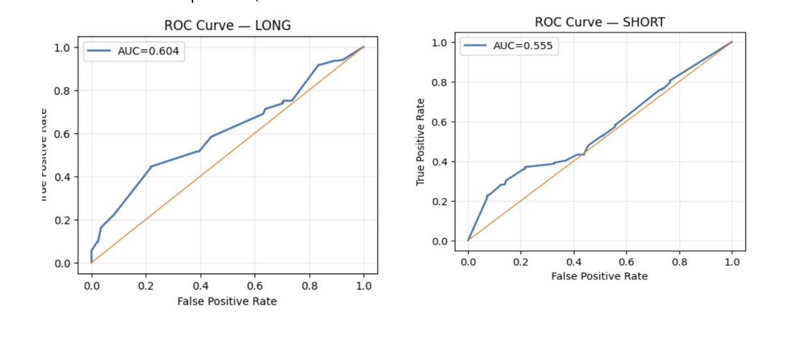

Statistical Arbitrage: Regime-Aware SVM Pairs Trading
A pairs-trading project that discovers cointegrated equity pairs, engineers econometric features (OU half-life, Hurst, momentum), infers market regimes via an HMM, and trains calibrated SVM classifiers (long/short) with walk-forward evaluation. Despite modest PnL, ROC/AUC shows weak but real predictive power; losses are largely driven by exits and thresholding rather than lack of signal.
- Universe: Liquid US equities; candidate pairs such as DIA–SPY, UNP–CSX, NEE–DUK
- Screening: Rolling 60-bar correlation & Engle–Granger cointegration (ADF p-value)
- Mean-reversion speed: OU half-life with tradable band (daily ≈ 3–90 bars; hourly ≈ 10–120 bars)
- Features: κ, σ, half-life, Hurst, momentum, spread z-score, HMM regime probs, macro (VIX, term spread)

- Walk-forward: Train ≈ 750 bars (≈3y), test ≈ 252 bars (≈1y) with a ~30-bar label buffer; repeat
- Separate SVMs per side: long vs short, calibrated (Platt/sigmoid) to get p_profit
- Regime weighting: multiply p_profit by HMM mean-reversion regime probability
- Selection: per-fold ROC-optimal probability threshold (Youden J) or top-20% confidence quantile
- Execution rules: enter when |z| ≥ k; TP when z→0; SL beyond entry; max holding cap
- AUC (ranking power): ~0.60 (long), ~0.56 (short) → better than random separation
- Per-pair behavior: UNP–CSX positive PnL; DIA–SPY and NEE–DUK underperformed under current exits
- Takeaway: model shows directional awareness; profitability is sensitive to exits, max-hold, and thresholds


Key Features
- Cointegration + OU half-life screening
- Regime-aware features (HMM) and macro context
- Calibrated SVM probabilities per side
- Walk-forward, no-leakage evaluation
- ROC-optimal thresholds / adaptive quantiles
- Clear diagnostic visuals (EG p-values, half-life, ROC, equity curves)